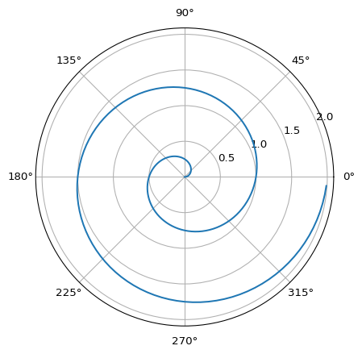

for count in 0, 1, 2, 3, 4, 5:
print(count)0
1
2
3
4
5We can code Python chunks and access the Python Standard Library (no package install needed)
for count in 0, 1, 2, 3, 4, 5:
print(count)0
1
2
3
4
5the math module is part of the PSL:
import math
print(math.pi) 3.141592653589793Part of Python’s power are found in its libraries. Here are two important libraries - NumPy and Matplotlib - they are not part of the Python Standard Library and must be installed separately. It is a bit confusing that one does not install the math library but still must import it.
import numpy as np # for numerical computing
import matplotlib.pyplot as plt # for data visualization
r = np.arange(0, 2, 0.01)
theta = 2 * np.pi * r
(fig, ax) = plt.subplots(
subplot_kw = {'projection': 'polar'}
)
ax.plot(theta, r)
ax.set_rticks([0.5, 1, 1.5, 2])
ax.grid(True)
plt.show()
The pandas library is what made Python the choice for data scientists. Along with NumPy and Matplotlib, these are libraries you cannot ignore as you build your expertise in Python.
import pandas as pd
import seaborn as sns
pd.set_option('display.width', 200)
# Load iris
iris = sns.load_dataset("iris")
print(f"What is iris?: \n {type(iris)} \n")
print(f"What is inside?: \n {iris.keys()} \n")
# print(sns.get_dataset_names()) # to see the other data in SeabornWhat is iris?:
<class 'pandas.core.frame.DataFrame'>
What is inside?:
Index(['sepal_length', 'sepal_width', 'petal_length', 'petal_width', 'species'], dtype='object')
Pandas has a method for its DataFrame objects describe(). In Python, when a function is defined for a class and operates on instances of that class, it is called a method. The describe method is called with a dot “.” on a DataFrame object.
print(f"Summary statistics: \n {iris.describe()} \n")Summary statistics:
sepal_length sepal_width petal_length petal_width
count 150.000000 150.000000 150.000000 150.000000
mean 5.843333 3.057333 3.758000 1.199333
std 0.828066 0.435866 1.765298 0.762238
min 4.300000 2.000000 1.000000 0.100000
25% 5.100000 2.800000 1.600000 0.300000
50% 5.800000 3.000000 4.350000 1.300000
75% 6.400000 3.300000 5.100000 1.800000
max 7.900000 4.400000 6.900000 2.500000
If a pandas Dataframe is like a table, then a pandas series is like a column.
We can extract a single column using the single square brackets with the name:
print(f"What is iris['species']? \n {type(iris['species'])}")
print(f"What is iris.iloc[:, 4]? \n {type(iris.iloc[:, 4])}") # equivalent by positionWhat is iris['species']?
<class 'pandas.core.series.Series'>
What is iris.iloc[:, 4]?
<class 'pandas.core.series.Series'>We can tabulate a series:
print(f"Species distribution:")
print(iris['species'].value_counts())Species distribution:
species
setosa 50
versicolor 50
virginica 50
Name: count, dtype: int64